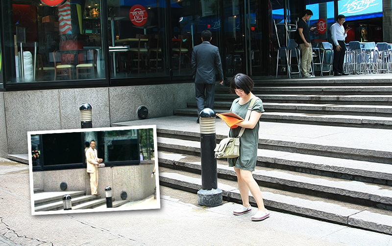
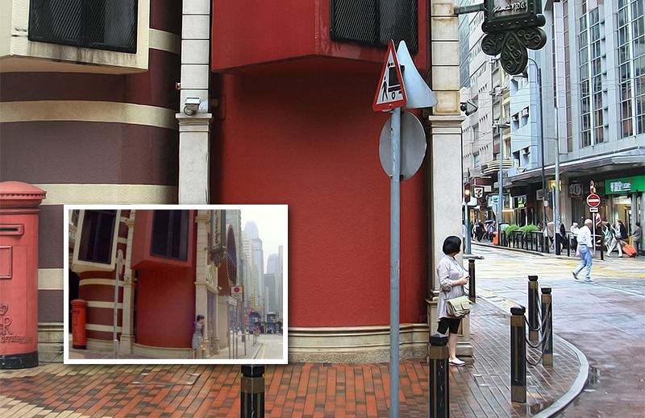
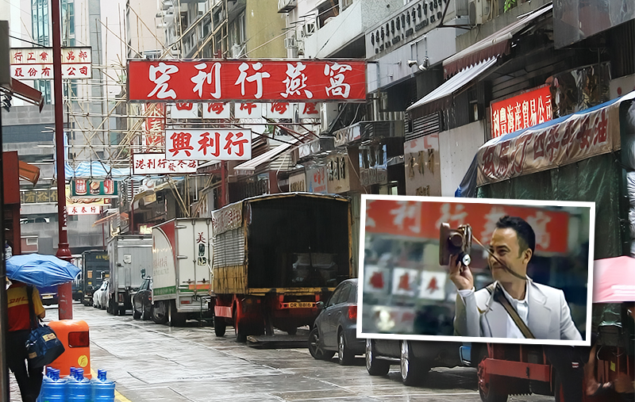

去香港之前准备了一份电影街景攻略，没想到准备完之后发现大半的街景出处都来自《文雀》。杜琪峰的《文雀》，大概讨厌它的人跟喜欢它的一样多，还有不少人说看睡着了的。我们却很喜欢这个简单精巧的小故事，前前后后看过三遍，这部电影就像一首影像小诗，在法国音乐人Xavier Jamaux的背景原声中缓缓道来。有时候生活中的奇遇会让你总觉得要发生点什么，结果什么也没发生。城市里，人与人交汇，撞见，然后挥手，离别，过程中留下一些故事，然而即便是那些最惊奇的故事，在完结后回过头再看也不过一场恍若隔世的梦而已。雀来雀走，人来人走，就像前一阵突如其来跑到我家的猫，最终还是走了，留下一张躺在我家箱子里的照片，好让我偶尔回忆曾经的相遇，然后继续平淡的生活。 !

希慎道：开篇任达华的4人扒手团上演联合高超作案的地点，位于希慎道10号。任达华一开始拿着报纸倚靠在拐角的墙边，找到目标后，几个人开始穿插走位，偷钱包，任达华还展示了嘴藏刀片的功夫。
和昌大押：在莊士敦道的某个路口，偶然看到了这座黄房子，写着和昌大押和余氏宗亲会。任达华在《文雀》开篇骑车从这个路口绕过。来之前这个地点被我从攻略里删掉了，因为google街景地图上显示这里在维修，和眼前以及电影里的景致完全不同。没想到就这样轻松被我们撞见。

西港城：住的地方离西港城很近，第二天一早自然是先去西港城，再从这里慢慢往南往东逛。林熙蕾在《文雀》里一路小跑着来到西港城，躲在红墙背后，一直等到老板手下监视她的车开过。

文咸街：往南走两个小路口来到文咸街，这里到处是卖燕窝参茸补品的店面，《文雀》里任达华也曾一边骑车一边拍照经过这里，拍下店伙计从货车上搬货的场景。和电影里一样，燕窝店门口都停着货车，伙计们正忙着装运货品。